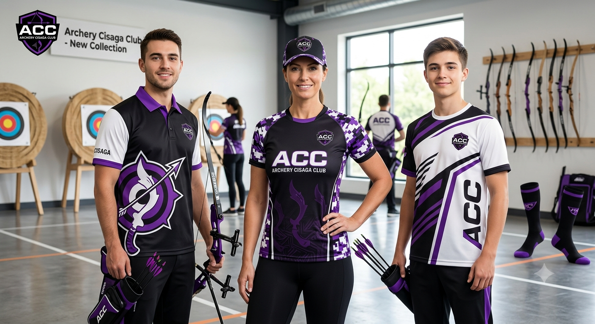
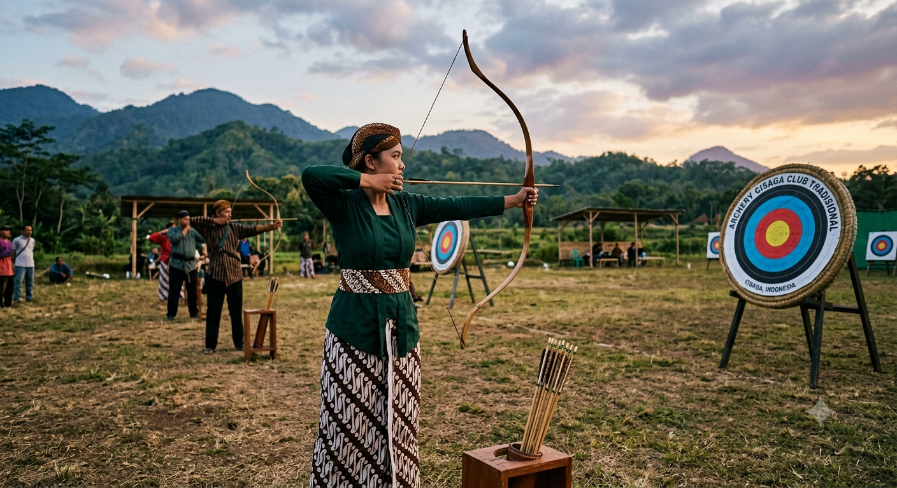
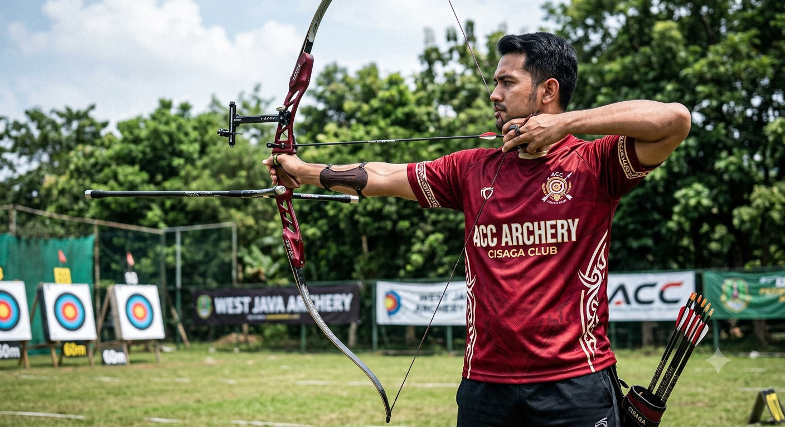
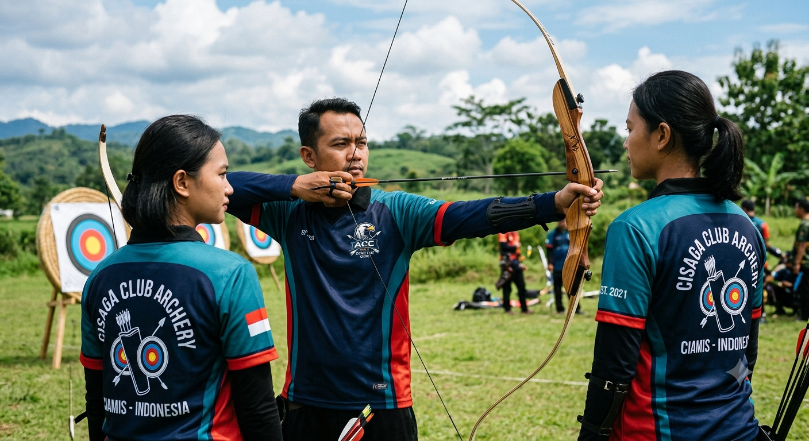
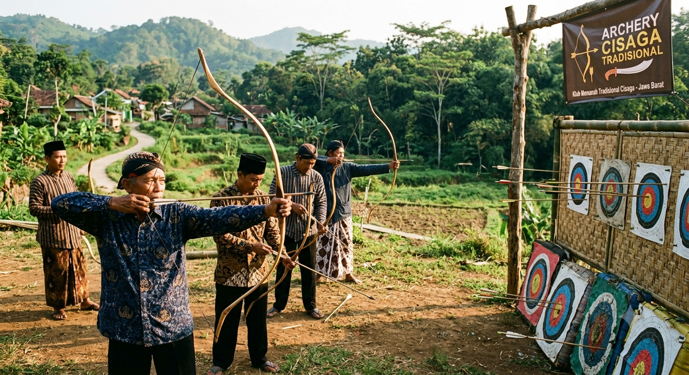

CISAGA
CISAGA
CISAGA
CISAGA

Fokus, Tenang, Tepat Sasaran. Bergabunglah bersama kami untuk mengasah kemampuan memanah Anda dari tingkat dasar hingga prestasi.
Daftar SekarangArchery Cisaga Club (ACC) adalah wadah olahraga panahan di wilayah Cisaga dan sekitarnya. Kami berkomitmen untuk memasyarakatkan olahraga panahan serta mencetak atlet-atlet berbakat yang berintegritas, disiplin, dan berprestasi.
Kami menyediakan fasilitas latihan yang aman, peralatan standar nasional, serta dibimbing oleh pelatih berpengalaman.





Khusus untuk yang baru memulai. Fokus pada teknik dasar penarikan busur, pengenalan alat, dan prosedur keselamatan (*safety rules*).
Program latihan intensif untuk mempersiapkan para anggota mengikuti berbagai kompetisi atau turnamen resmi tingkat daerah maupun nasional.
Sesi fleksibel dan menyenangkan yang cocok untuk menjaga kebugaran, melatih fokus mental, maupun kegiatan komunitas.
Alamat: Lapangan Latihan ACC, Kec. Cisaga, Kab. Ciamis, Jawa Barat
WhatsApp: +62
Email: cisagaarchery@gmail.com
Jadwal Latihan: Sabtu & Minggu (08.00 - 11.00 WIB)
🗺️ Lapangan Latihan ACC - Cisaga